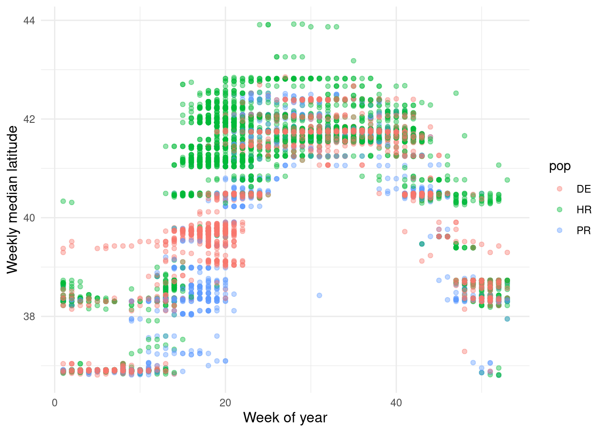

The analysis and narrative on this page are incomplete and speculative.
Code
library(arrow) # Data importlibrary(dplyr) # Data manipulationlibrary(ggplot2) # Data visualizationlibrary(mgcv) # GAM fittinglibrary(gratia) # GAM visualizationlibrary(refund) # FDAtheme_set(theme_minimal())sb <-file.path(Sys.getenv("DATA_DIR"),"data/derived/sb_rotated.parquet") |>read_parquet()
Flyway models can viewed as a form of functional data analysis (FDA, see Gertheiss et al. (2024) for a current review), where the observation unit is a “function” rather than a single point. The field of FDA encompasses sets of descriptive statistics, dimensionality reduction, regression techniques and more. Unfortunately, as FDA often assumes equally-spaced observations, the temporally-sparse nature of telemetry data limits us in what FDA methods we can use; analysts are often left imputing missing time steps which can sometimes make up most of the fitted data (see Secor et al. (2020), for instance).
Luckily, functional data regression, also called functional regression modeling (FRM), uses basis function methods extensively to smooth across missing observations (Morris 2015; Greven and Scheipl 2017). Penalized splines are often the semiparametric method of choice due to their ability to algorthmically select an optimal set of knots according to the provided data. Hierarchical GAMs as described in Pedersen et al. (2019) are a form of function-on-scalar FRM as the shape or “wiggliness” of a response (the “functional data”) is differentially fit across groups (the “scalar”). In our previous analyses, we used a “by-variable smooth” in the mgcv R package (Wood 2017) to allow the response curve to vary according to species or populations; this is the same method, with the same software, promoted for use in FRM by Crainiceanu et al. (2024).
In Secor et al. (2025) and analyses up to this point, our observation unit has been a location of an animal, at a time, in a set of given conditions at that time. To aid in conceptualization of this, imagine an Excel spreadsheet: each data point (observation) could fit on a row with columns of time, location, and individual. If analyzing a flyway in the functional data framework, the observation unit transforms to an individual’s whole migration track across a year or period of tagging – all of the times and location of an individual get folded together into a given “row”.
Visually, what we are doing with regular regression is working with data like this, where we have a point for location in a given week according to population, individual, etc.
\[lat_{it} \sim pop_{it} + \epsilon_{it}\]
Code
ggplot(sb) +geom_point(aes(x = wk, y = med_lat, color = pop), alpha =0.4) +labs(x ="Week of year", y ="Weekly median latitude") +theme(axis.title =element_text(size =12))

If we view this using the functional regression paradigm, our underlying data look like this, where the response is latitude as a function of time and the predictor is population.
\[
lat_i(t) \sim pop_i + \epsilon_i
\]
Code
ggplot(sb) +geom_line(aes(x = wk,y = med_lat,color = pop,group =interaction(transmitter, year) ),alpha =0.4 ) +labs(x ="Week of year", y ="Weekly median latitude") +theme(axis.title =element_text(size =12))
Crainiceanu, Ciprian M., Jeff Goldsmith, Andrew Leroux, and Erjia Cui. 2024. Functional Data Analysis with r. 1st ed. Chapman; Hall/CRC. https://doi.org/10.1201/9781003278726.
Gertheiss, Jan, David Rügamer, Bernard X. W. Liew, and Sonja Greven. 2024. “Functional Data Analysis: An Introduction and Recent Developments.”Biometrical Journal 66 (7): e202300363. https://doi.org/10.1002/bimj.202300363.
Greven, Sonja, and Fabian Scheipl. 2017. “A General Framework for Functional Regression Modelling.”Statistical Modelling 17 (1-2): 1–35. https://doi.org/10.1177/1471082X16681317.
Pedersen, Eric J., David L. Miller, Gavin L. Simpson, and Noam Ross. 2019. “Hierarchical Generalized Additive Models in Ecology: An Introduction with Mgcv.”PeerJ 7 (May): e6876. https://doi.org/10.7717/peerj.6876.
Secor, David H., Michael H. P. O’Brien, Benjamin I. Gahagan, Dewayne A. Fox, Amanda L. Higgs, and Jessica E. Best. 2020. “Multiple Spawning Run Contingents and Population Consequences in Migratory Striped Bass Morone Saxatilis.”PLOS ONE 15 (11): e0242797. https://doi.org/10.1371/journal.pone.0242797.
Secor, David H, Michael H P O’Brien, and Helen Bailey. 2025. “The Flyway Construct and Assessment of Offshore Wind Farm Impacts on Migratory Marine Fauna.”ICES Journal of Marine Science 82 (3): fsae138. https://doi.org/10.1093/icesjms/fsae138.
Wood, Simon N. 2017. Generalized Additive Models: An Introduction with r. Second. CRC Press.